景点 & 餐厅总览
河源恐龙文博园为国家 AAAA 级景区，园内包含恐龙博物馆（收费）、龟峰塔（国保·5 元）、河源市博物馆（免费）三馆一塔，均步行可达。以下逐一介绍，另附河源周边人文历史与自然地理景点。
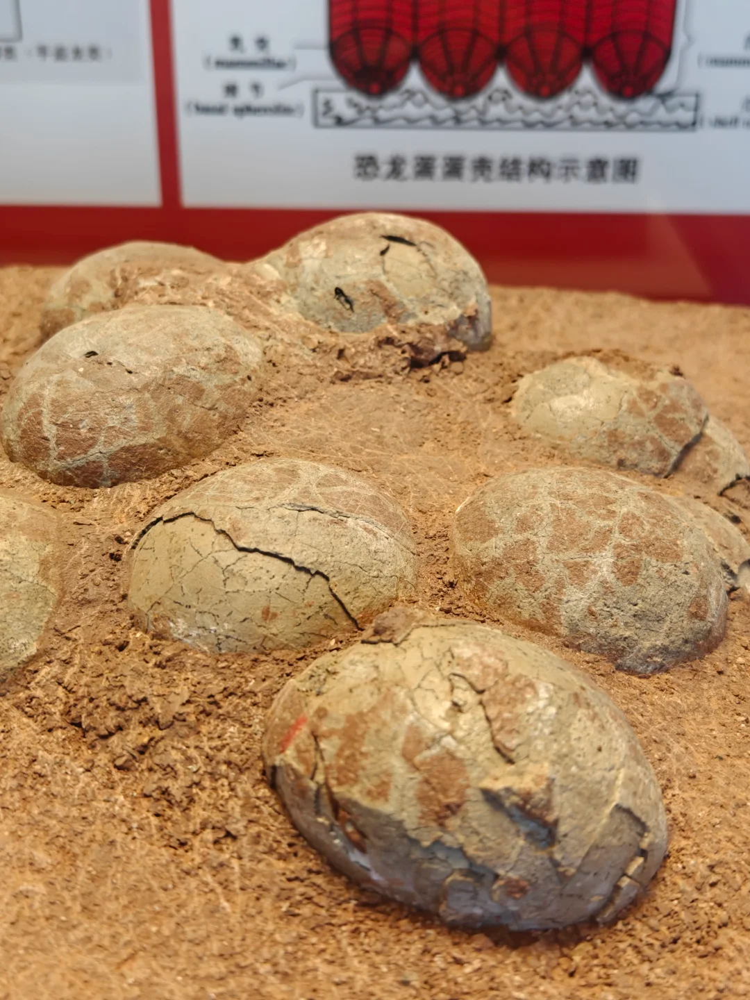
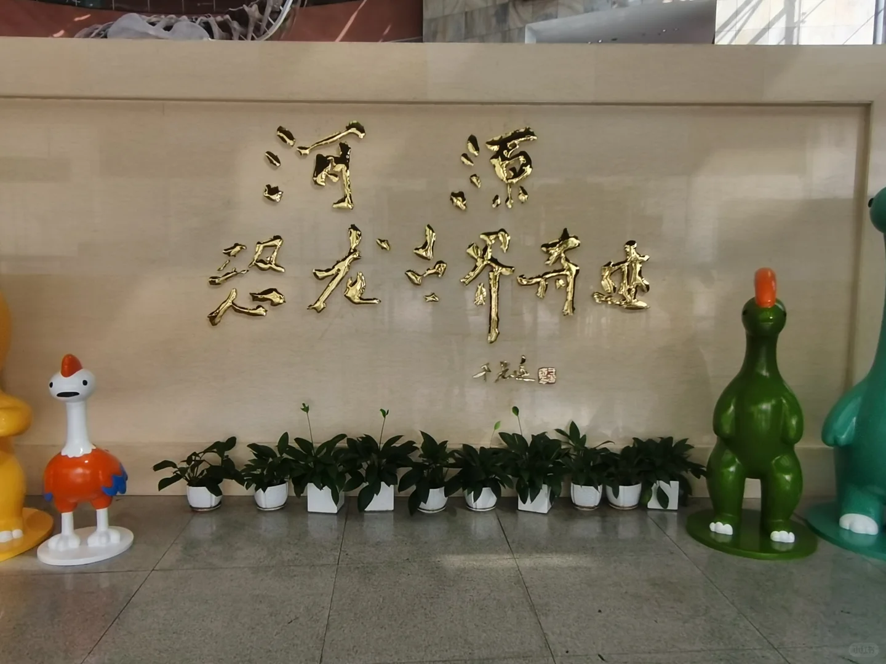


河源恐龙博物馆
又名「中国古动物馆恐龙蛋馆」，2010 年建成开放，2013 年与中科院古脊椎动物与古人类研究所合作共建。建筑面积 8300m²，展览面积 2800m²。馆藏恐龙蛋化石 近 2 万枚（全球之冠）、恐龙骨骼化石 20 多具、恐龙足迹模型 8 组 168 个。
一楼分《恐龙产房》《恐龙足迹》《恐龙故乡》三个基本陈列；二楼《旋出美丽——菊石主题展》；三楼《小昆虫 大世界——昆虫标本科普展》。馆内还有「史前部落」恐龙科普主题乐园。
镇馆之宝——黄氏河源龙：1999 年发现于市郊黄沙村，属窃蛋龙类，身长 2–3 米，体重约 100 公斤，是恐龙向鸟类演化的中间生物。以发现者、河源恐龙博物馆原馆长黄东姓氏命名。国家一级重点保护古生物化石，广东省唯一获此等级的化石。
门票：成人 30 元/人，儿童 15 元/人。龟峰塔另收 5 元/人。
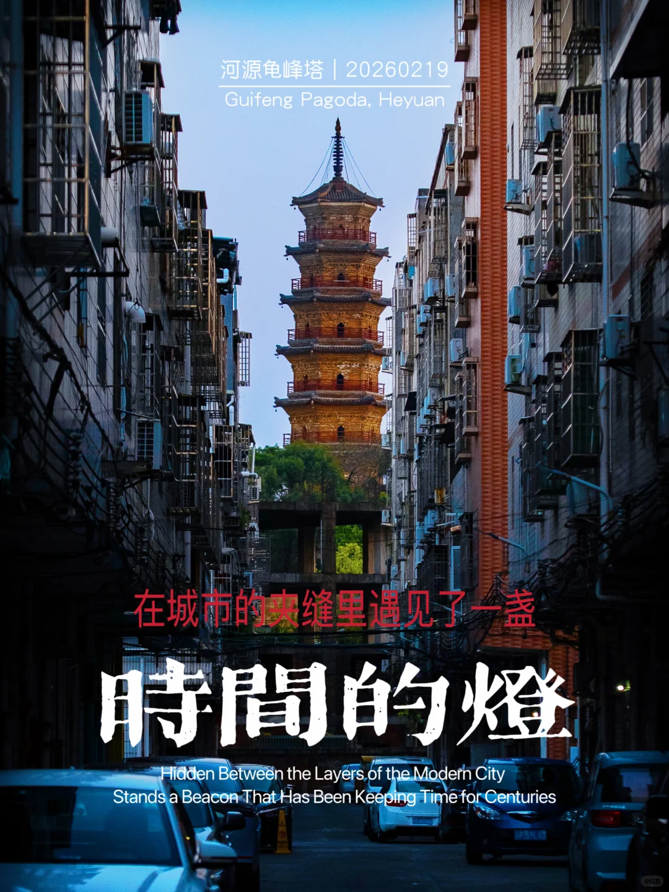

龟峰塔
南宋绍兴二年（1132 年）建，六角七层楼阁式砖塔，高约 35 米，全国重点文物保护单位。登塔可俯瞰东江与新丰江「两江交汇」的壮丽景色。与恐龙博物馆同在文博园内，步行可达。
门票：5 元/人。
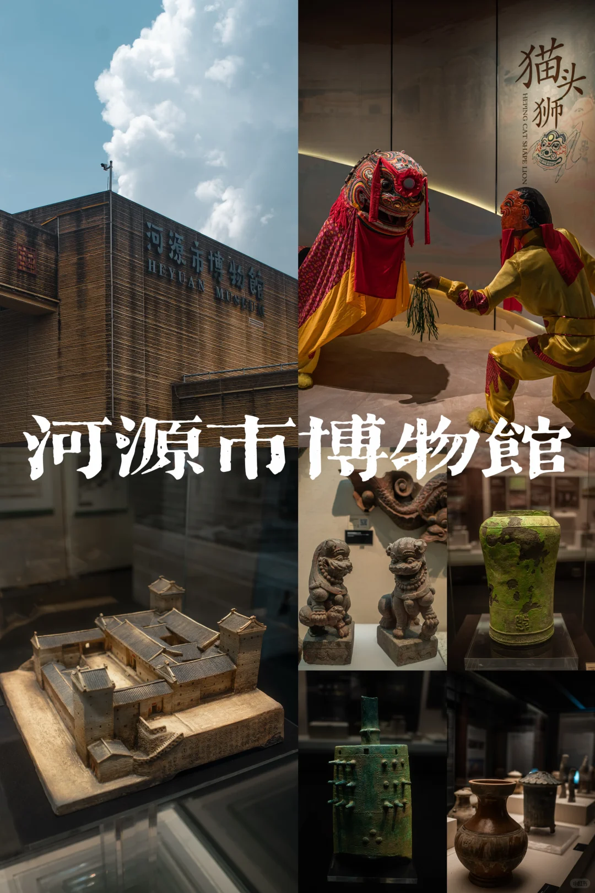
河源市博物馆
2016 年建成开放，与恐龙博物馆同属文博园。展览分《河源历史文化》《河源客家民俗》两大基本陈列，展现河源从新石器时代到近现代的 5000 多年文明。馆藏文物 56000 多件。
门票：免费，凭有效证件领票进入。每日限 3000 张。
周边人文历史景点
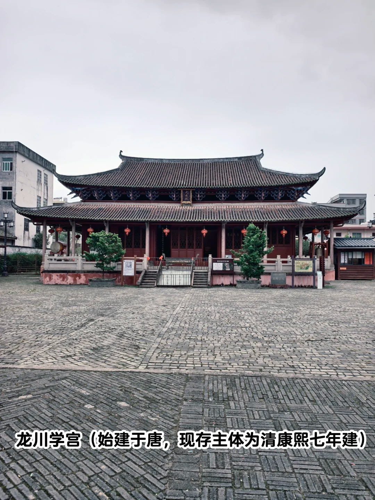
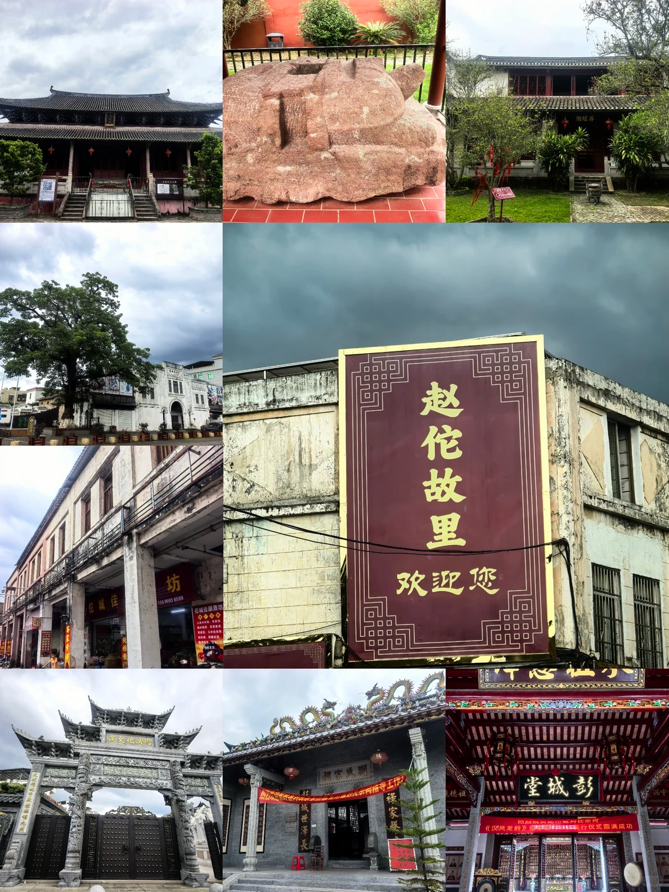


龙川佗城 · 岭南第一古镇
距河源市区 1h公元前 214 年秦置龙川县治所，2225 年历史，秦朝岭南四大古邑中唯一保存最完整的古城。为纪念首任县令——后来的南越王赵佗而得名。全国罕见的「学宫与考棚共存」之地，有「中华姓氏古祠堂博物馆」之誉（4 万人口 179 个姓）。
保存秦代越王井/赵佗故居遗址、唐代正相塔、宋代古城墙/越王庙、明代城隍庙、清代学宫/考棚等 100 多处古迹。1991 年评为广东省首批历史文化名城，2010 年获联合国地名专家组「千年古县」认证。
门票：免费（学宫/南越王庙/越王井/考棚/商会五大景点）。
地址：河源市龙川县佗城镇学宫旁，免费停车。
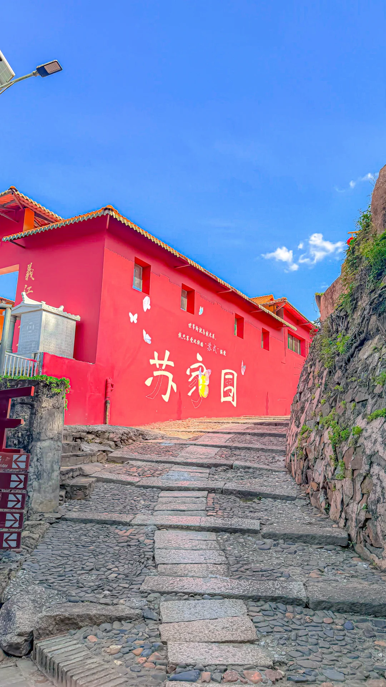
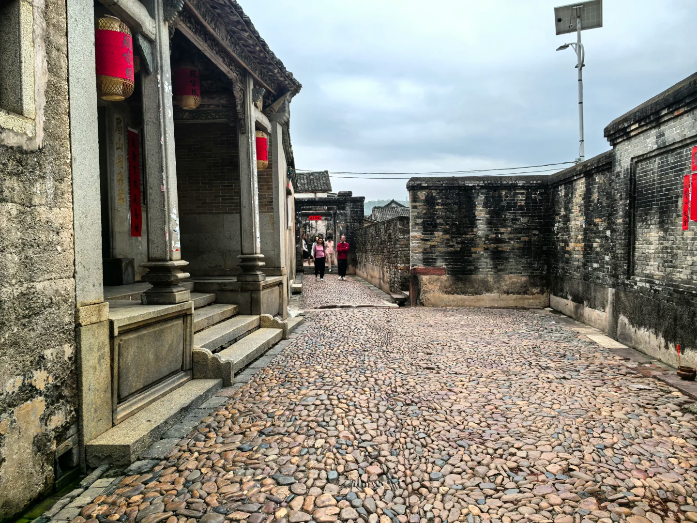

苏家围 · 南中国画里乡村
距河源市区 30min北宋大文豪苏东坡后裔的聚居地，已有 700 多年历史。全村 18 座围屋，其中 5 座为明代建筑。东江与久社河在南面交汇，山水环绕，获评「广东省最美乡村」「广东省古村落文化遗产」保护单位。
可看明清客家围龙屋、千年古榕、东江古道、客家农耕展、竹筏游东江。是了解 客家建筑文化与宗族社会 的活态博物馆。
门票：成人 22 元，儿童/学生 15 元。
地址：河源市东源县义合镇苏家围，免费停车。
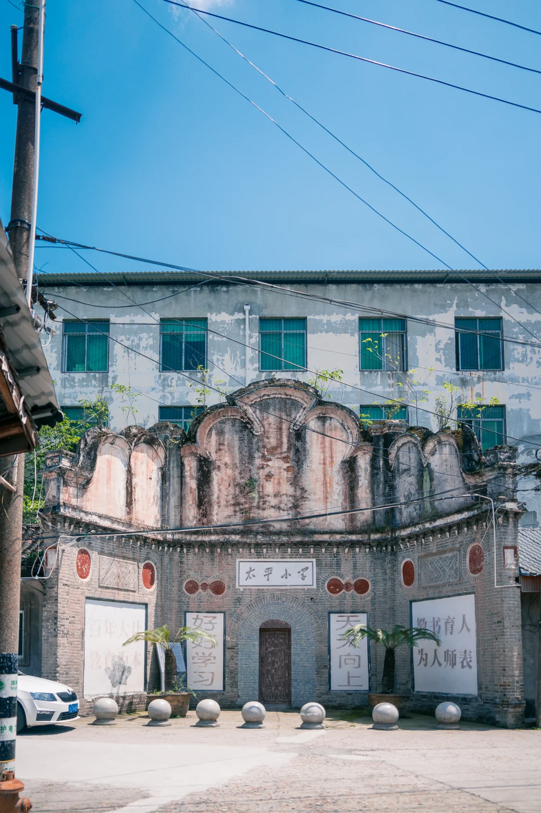
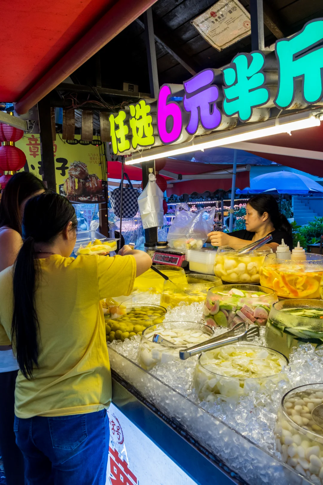

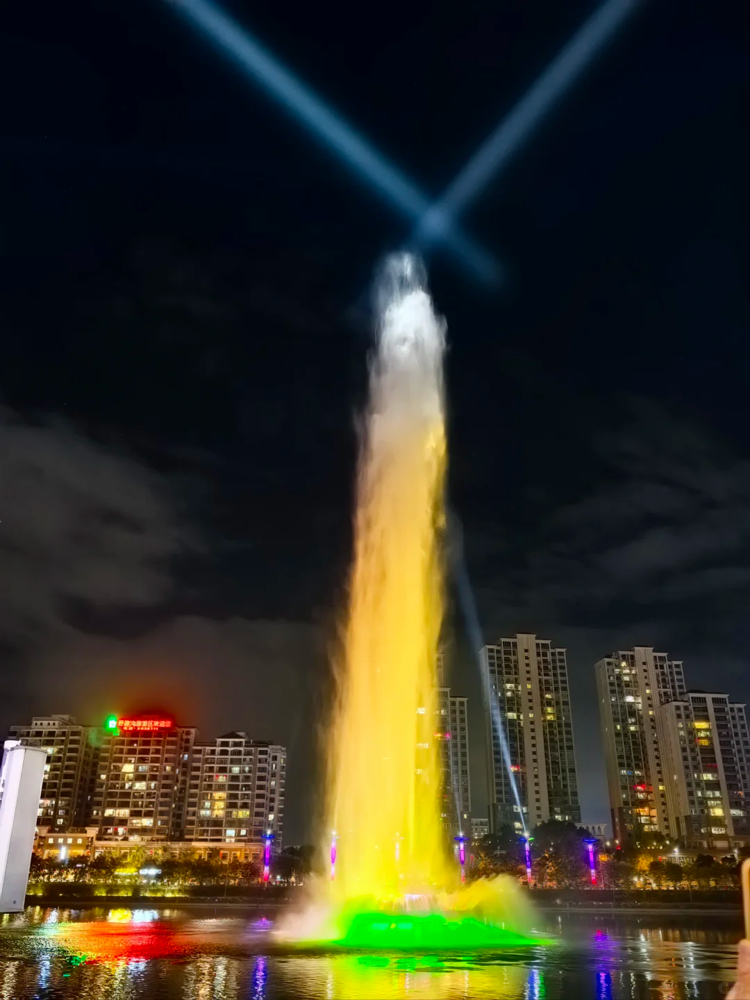
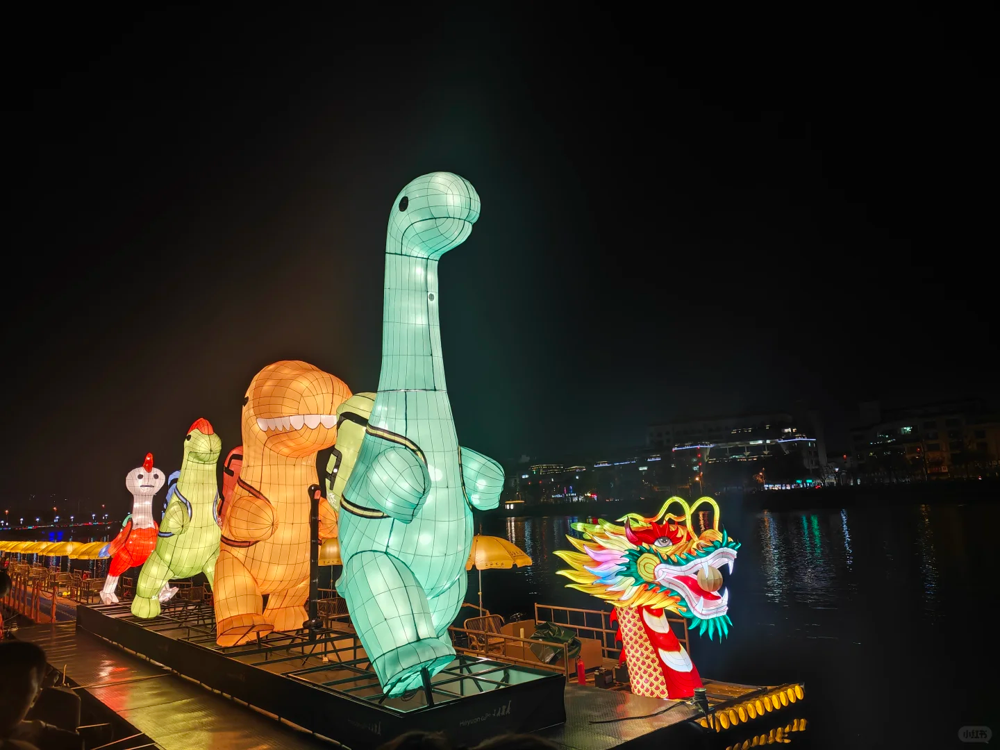

太平古街 + 亚洲第一高喷泉
河源市区 · 步行可达太平古街：百年骑楼建筑群，全天开放、免费。客家特色小吃密集（老鼠粉、萝卜粄、腌面、猪脚粉），夜间灯笼亮起拍照氛围感极佳。
亚洲第一高喷泉：位于新丰江中心，喷高达 169 米，配合激光与音乐变幻造型。每晚 20:00–20:30 一场，免费观赏。站在新丰江大桥观景台，水幕与江中倒影构成立体画卷。距翔丰国际酒店步行 5 分钟。
喷泉：每晚 20:00–20:30 一场（如遇大雨可能暂停）。
周边人文古村 · 自然地理补充
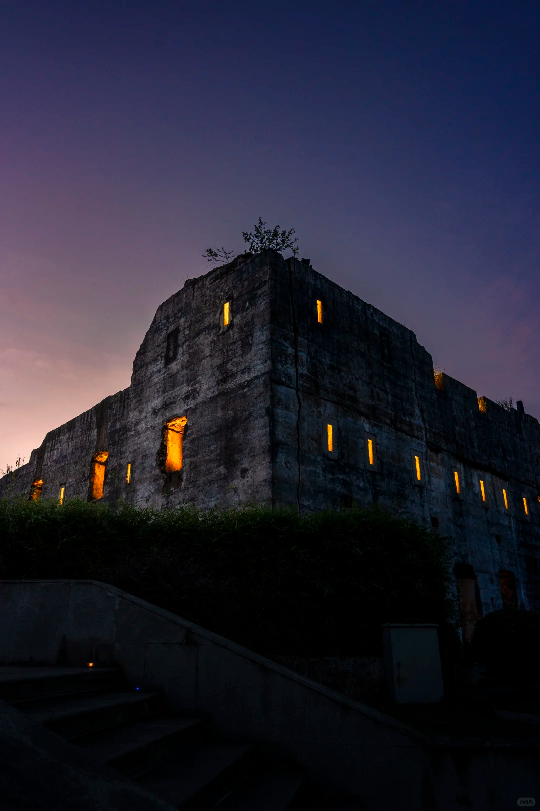


南园古村 · 400年潘氏客家围屋群
距河源市区 20min始建于 明朝万历年间（约 1580 年），已有 440 多年历史，由潘氏后裔始建的纯客家古村落。占地 1.5 平方公里，保存 21 幢明清时期客家方形围屋，是「潘氏」同姓聚居的代表性客家古村，广东省文物保护单位、国家 3A 级景区。
核心看点：柳溪书院（1824 年·市级非遗「开笔礼」）→ 古炮楼遗址（「粽墙」·糯米红糖夯筑·墙厚 80cm）→ 老衙门/新衙门（罕见乡村级清代行政遗址）→ 大夫第（潘氏官宦宅第）。村内有网红咖啡馆、手染基地，古今交融。
门票：免费。
地址：河源市东源县仙塘镇红光村，免费停车。
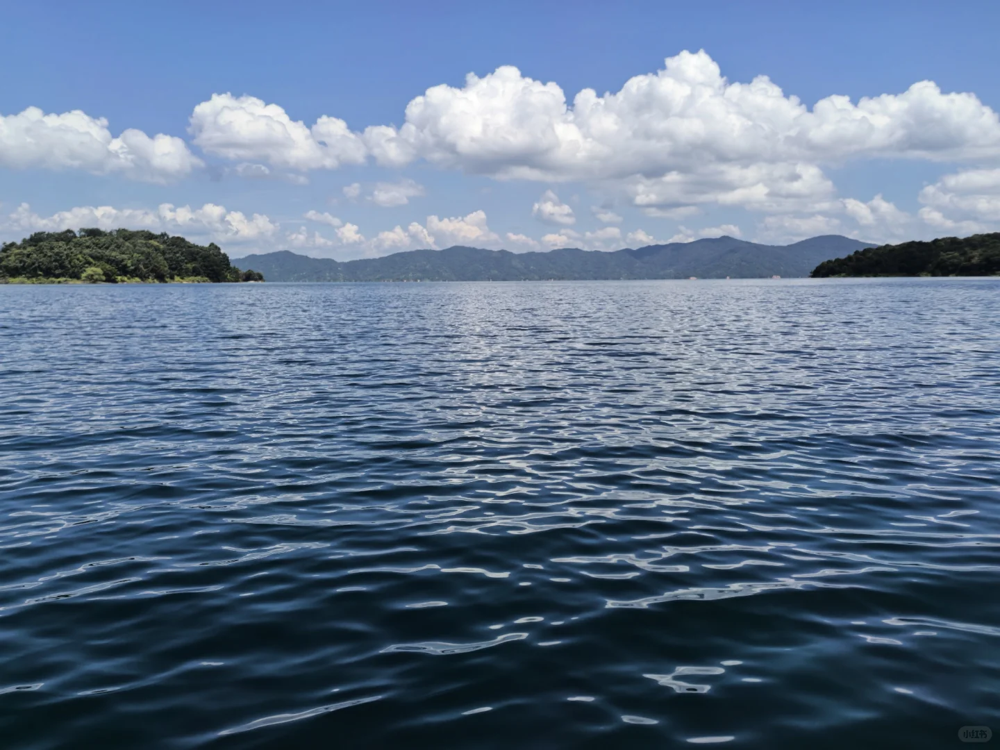


万绿湖（新丰江水库）
距河源市区 30min华南第一大人工湖，水域面积 370km²，储水量 139 亿 m³。水质常年保持国家一类地表水标准，是东深供水工程的核心水源——香港、深圳、东莞的饮用水都来自这里。因四季常青、处处皆绿而得名，与西双版纳、鼎湖山并称北回归线「沙漠腰带上的东三奇」。
乘船游湖约 3–4 小时，经水月湾→龙凤岛→镜花缘→客家风情馆。不想坐船可只逛 镜花缘景区——湖边栈道步行，1.5–2 小时足够，票价仅 ¥35/成人。
门票·船线：成人 175 元 儿童 125 元（2 大 1 小≈475 元）。
门票·镜花缘：成人 35 元 儿童 20 元（2 大 1 小≈90 元，不坐船）。
地址：河源市东源县新港镇港中路 17 号。免费停车。
枫树坝水库（青龙湖）
距河源市区2h+ · 龙川县广东省第二大水库，又名青龙湖。位于龙川县北部、东江上游，1970 年动工、1974 年投产。大坝高 91.5 米、坝顶长 418 米，属空腹重力坝。周边 15671 公顷为省级自然保护区，有植物 500 多种、野生动物 70 多种（含白颈长尾雉、豹、蟒蛇等 15 种珍稀物种）。
可看大坝雄姿、坐当地渔船游湖（需自行联系）、春夏秋三季风景各异。但 距河源市区 140km、车程 2 小时以上，旅游配套极少，携程仅 19 条点评。
门票：免费。
⚠️ 不推荐 2 天行程——往返 4 小时车程，会严重挤占其他景点时间。适合 3 天以上深度自驾。
- 万绿湖：✅ 可行，推荐作为可选加项。距市区仅 30 分钟，半日游即可（镜花缘 1.5–2h / 船线 3–4h）。地理教育价值高——让孩子看到「港深水塔」的真面目、理解水库如何供水。最大障碍是 票价偏高（船线 ¥475/家）。建议选镜花缘轻量方案（¥90/家），或替换方案 B 的苏家围上午段。
- 枫树坝水库：❌ 不推荐 2 天行程。距河源市区 140km、单程 2 小时以上，往返即消耗半天。景区无正式旅游配套，更适合 3 天以上的深度自驾游或户外探险。如果你计划延长行程到 3 天，可将枫树坝作为龙川佗城的延伸（两者同在龙川县，相距约 60km、车程 1 小时）。此处仅作知识性收录。